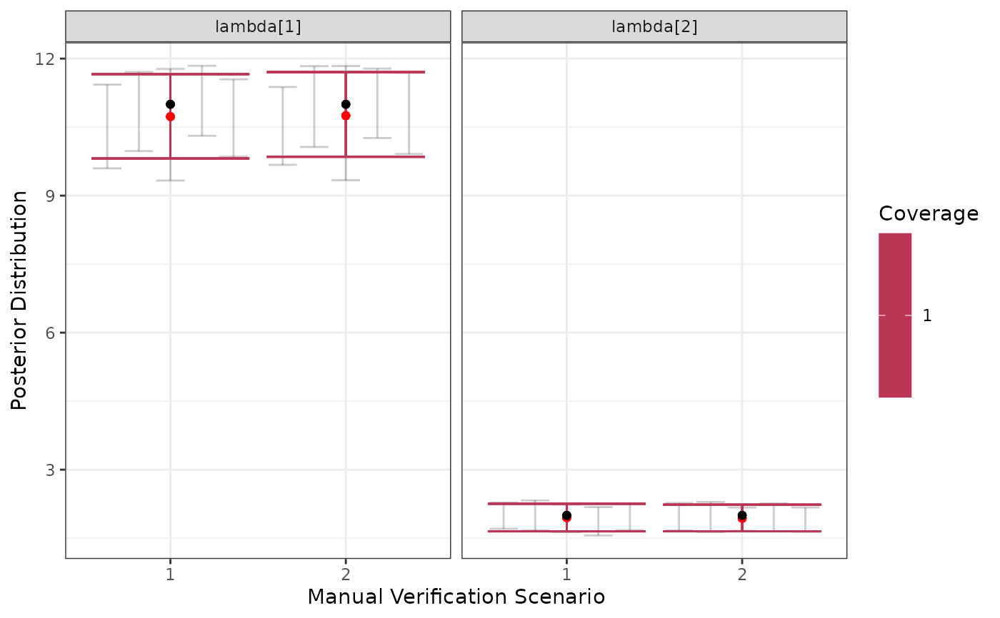

A dataframe in the format output from running run_sims. This exists solely for the purpose of making documentation of visualization functions easier.
parameter. Parameters (lambda, psi, and theta for a two species assemblage).
Mean. The posterior mean.
SD. The standard deviation of the draws of reach parameter.
Naive SE. The standard error, not accounting for the correlation in draws
Time-series SE. The standard error, accounting for correlation in draws.
quantiles. 2.5%, 25%, 50%, 75% and 97.5% quantiles.
Rhat. The Gelman-Rubin statistic for each parameter.
ess_bulk. The effective sample size in the bulk of the distribution.
ess_tail. The effective sample size in the tails of the distribution.
truth. The known true data generating value.
capture. Did the 95% posterior interval contain the true value?
converge. Was the Gelman-Rubin statistic near 1?
theta_scenario. The ID for the classifier scenario.
scenario. The index of the validation scenario.
dataset. The dataset index.
Examples
head(example_output)
#> parameter Mean SD Naive SE Time-series SE 2.5%
#> 1 lambda[1] 10.5402608 0.44750142 0.0081702207 0.0182798878 9.5979341
#> 2 lambda[2] 1.9680659 0.14992411 0.0027372272 0.0058588973 1.7054354
#> 3 psi[1] 0.3751644 0.08347440 0.0015240271 0.0014985897 0.2216834
#> 4 psi[2] 0.6573396 0.08548119 0.0015606659 0.0016423863 0.4788996
#> 5 theta[1, 1] 0.9037891 0.01331254 0.0002430526 0.0003714269 0.8760539
#> 6 theta[2, 1] 0.1843591 0.02909271 0.0005311577 0.0008468697 0.1303132
#> 25% 50% 75% 97.5% Rhat ess_bulk ess_tail
#> 1 10.2557086 10.5491417 10.8531496 11.4303959 1.000988 642.1892 456.9368
#> 2 1.8589258 1.9606380 2.0708147 2.2792265 1.004294 658.9695 761.9010
#> 3 0.3167012 0.3718161 0.4315794 0.5438603 1.000925 3210.6616 2850.9173
#> 4 0.5996358 0.6603728 0.7181591 0.8100538 1.002008 2478.4785 3027.4949
#> 5 0.8947687 0.9042210 0.9135142 0.9275596 1.002674 1296.4370 1300.5181
#> 6 0.1633648 0.1840185 0.2031841 0.2435565 1.003303 1161.4434 1276.9287
#> truth capture converge theta_scenario scenario dataset
#> 1 11.00 1 1 1 1 1
#> 2 2.00 1 1 1 1 1
#> 3 0.30 1 1 1 1 1
#> 4 0.60 1 1 1 1 1
#> 5 0.90 1 1 1 1 1
#> 6 0.15 1 1 1 1 1
visualize_parameter_group(
example_output,
pars = "lambda",
theta_scenario = "1",
scenarios = 1:2
)
